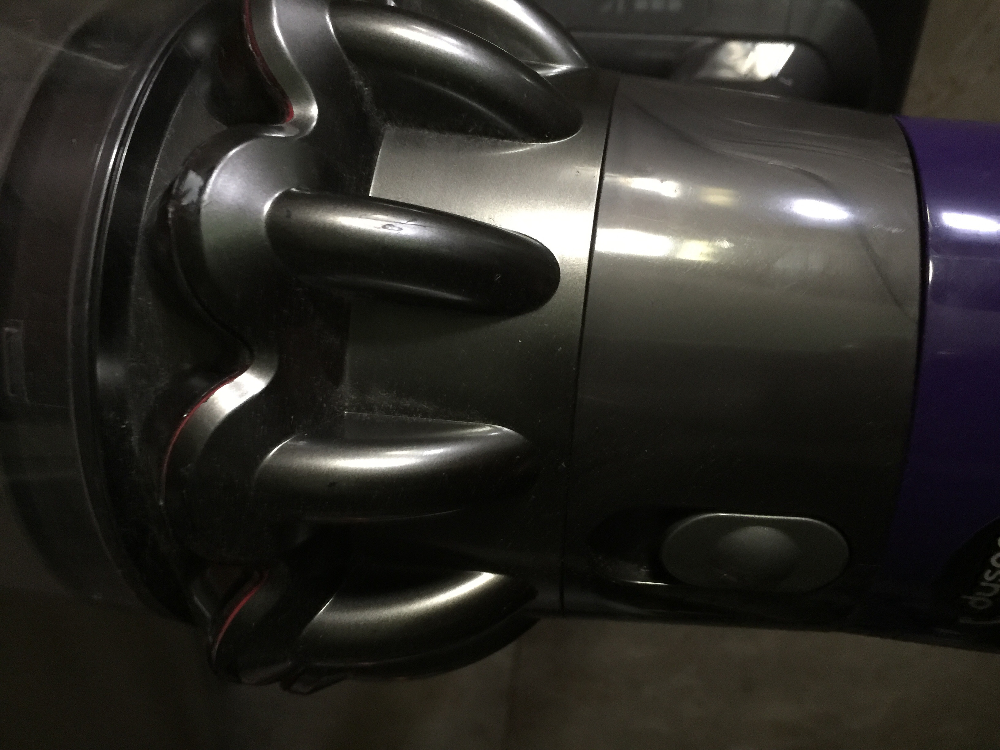

Guido van Rossum: Python and the Future of Programming
MicroPython + Pyscript: Is this finally Python on the Frontend?
https://builtin.com/artificial-intelligence/use-ai-fix-broken-code
What Is a Linter? Here's a Definition and Quick-Start Guide (testim.io)
Why Automation Won’t Replace Humans | Built In
web Sammir 2022 opening night
Day one
Day three
https://www.psypost.org/2022/11/attractive-female-students-no-longer-earned-higher-grades-when-classes-moved-online-during-covid-19-64251 - 外貌在疫情線上課程期間不再吃香https://www.cnbc.com/2022/11/04/web-inventor-tim-berners-lee-wants-us-to-ignore-web3.html
Tim Berners-Lee, the British computer scientist credited with inventing the World Wide Web in 1989, said Friday that he doesn’t view blockchain as a viable solution for building the next iteration of the internet.
https://phys.org/news/2022-10-scientists-exotic-quantum-state-room.html - Scientists discover exotic quantum state at room temperature
https://www.pcgamer.com/a-single-chip-has-managed-to-transfer-the-entire-internets-traffic-in-a-single-second/ - 網路連線速度只有更快沒有最快
https://www.digitaljournal.com/business/video-games-could-improve-kids-brains-study/article - 不是所有的線上遊戲都對孩童有害
https://www.datacenterdynamics.com/en/news/ibm-begins-installing-on-premise-quantum-computer-at-ohios-cleveland-clinic/ - 量子電腦的應用已經有很大進展
https://www.digitaltrends.com/news/search-and-rescue-jetpack-aces-flight-test-in-lousy-weather/ - 鋼鐵人救災已經可以實現了
https://www.reuters.com/technology/exclusive-automakers-double-spending-evs-batteries-12-trillion-by-2030-2022-10-21/ - 世界各大車廠正大量投資發展電動車跟電池技術
https://www.engadget.com/metas-ai-translator-can-interpret-unwritten-languages-150001511.html - 沒有文字的語言也能夠即時口譯了
https://www.vice.com/en/article/pkgxqz/record-labels-say-ai-music-generators-threaten-music-industry - AI 的應用已經殺進音樂產業
https://edition.cnn.com/2022/10/21/tech/artists-ai-images/index.html - 許多畫家的藝術作品被拿來訓練AI可用來產生幾乎相同畫風的不同作品
https://www.techspot.com/news/96392-someone-wrote-javascript-app-accurately-emulates-windows-95.html - 完全用 JavaScript 寫的類Windows 95
https://www.nature.com/articles/s41528-022-00207-2 - 背著機電系統的生化昆蟲可望被用於災難搜尋
https://www.nature.com/articles/s41586-022-04470-1 - DNA 的編修又向前一步
https://www.imperial.ac.uk/news/240775/new-flexible-steerable-device-placed-live/ - 機器手臂在微創手術應用上的進展
https://wccftech.com/intel-raptor-lake-roars-core-i9-13900k-claws-away-amd-fx-8350-cpu-frequency-world-record-hits-8-81-ghz-clocks/ - CPU 運行速度超紀錄
https://www.quantamagazine.org/inside-the-proton-the-most-complicated-thing-imaginable-20221019/ - 有關質子研究的進展
https://www.imperial.ac.uk/news/239973/3d-printing-drones-work-like-bees/ - 利用無人機進行 3D列印
下一張圖片是用手機直接拍攝後More than a century after Ernest Rutherford discovered the positively charged particle at the heart of every atom, physicists are still struggling to fully understand the proton.轉入：
假如是 iPhone 7 之後的手機，則需要將照片格式改為 JPG。
設定方法是：進入設定 - 相機 - 格式，將高效率改為最相容。

下一張照片則是由手機取畫面後轉入：
Copyright © All rights reserved | This template is made with by Colorlib